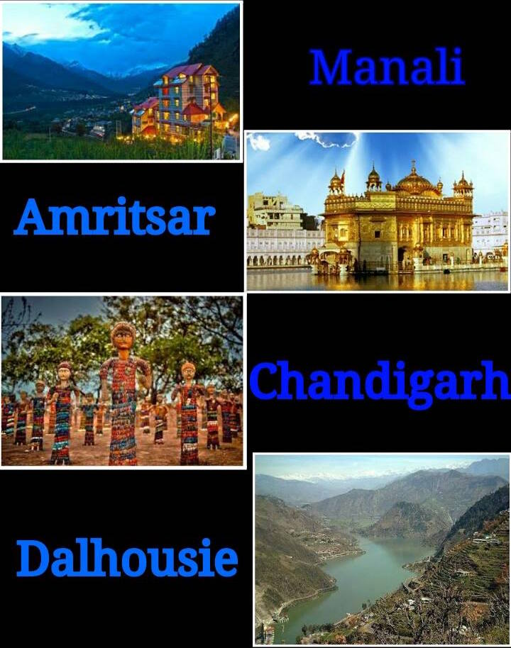

Orientation for First Year Students
Date: 2nd August 2017
Venue: FEIT(2nd Floor)
The FE orientation includes the introduction of ITSA to all the newcomers of the college i.e. first year students. This event was conducted with the purpose of understanding the needs and preferences of these newcomers and making them feel comfortable with their seniors and professors.
A good interaction between the Third Year (T.E.I.T) and the First Year (F.E.I.T) students was established in this session, making them familiar with the IT curriculum and highlights of Information Technology Engineering as a career option was giving to them. The event was successful in breaking the ice with the juniors.
Linux Workshop
Date: 12th August 2017
Conducted by: Mr. Kevin Bheda (S.P.I.T. Alumni)
Venue: FEIT(2nd Floor)
This workshop was conducted by an SPIT IT department alumni, Kevin Bheda. This was conducted specifically for students of second and third year to ease them into the Linux environment. Students were taught basic Linux commands like pipe, grep, chmod, chgrp etc.
ITSA Adventure Trail
Date: 20th August 2016
Place: Visapur Fort

Competitive Programming Workshop
Date: 2nd September, 2016
Conducted by:
Videet Singhai (T.E.I.T)
Akshay Raul (T.E.I.T)
Madhuri Jain (T.E.I.T)
Jaspreet Kaur (T.E.I.T)
Competitive programming is a mind sport usually held over the Internet or a local network, involving participants trying to program according to provided specifications. Contestants are referred to as sport programmers.With the evolving scope of competitive programming ITSA thought to organise a workshop for the first,second and third year people where the students were taught how to minimise their code by both time and space complexities and different algorithms to do so.
Teacher's day celebration
Date: 5th September 2016
Venue: Auditorium
On the occasion of Teacher’s Day on the 5th of September, ITSA organized Teacher’s Day celebrations. The entire faculty team of the Information Technology department was formally invited and was received by much applause and fanfare by students not only from the IT department but from the entire college. As the assembled crowd cheered, a cake was cut and small mementos were given to the teachers to mark the occasion while they helped themselves to some refreshments. Soon the entertainment section of the event commenced. The last event was making all the teachers doing random activities much to the amusement of all who were present. In the end, a grand time was had by all.
Android Workshop
Date: 6th - 9th September, 2016
Conducted by:
Nishita Dutta (T.E.I.T)
Prem Raheja (T.E.I.T)
Purva Jhaveri (T.E.I.T)
Surmeet Kaur(T.E.I.T)
Taufiq Monghal(T.E.I.T)
With the emerging market of Android there was a need to make students up to date with the market requirements. Students where taught how to build an android application and how to include different functions and apis like local storage, maps, etc.
Calculator Workshop
Date:14th September, 2016
Conducted by: Prem Raheja(T.E.I.T)
Students were taught the different functions of a scientific calculator which is used in many different subjects in the four years of Engineering. The first years student participated in large numbers.
Programming Contest
Date:25th September, 2016
Conducted by: ITSA
ITSA had conducted a Programming Contest on Hackerrank for First, Second and Third Year Students. The problem statement were Designed by Vikesh Tiwari (B.E.I.T) , Akshay Raul (T.E.I.T) and Jaspreet Kaur Bhamra (T.E.I.T). Nishita Dutta from T.E.I.T bagged the first prize. Karthik Sriram form TEIT winning the second followed by Manohar Malvankar from T.E.I.T.
C Workshop
Date:15th, 16th October, 2016
Conducted by: Jaspreet Kaur Bhamra(TEIT)
C is a general-purpose, imperative computer programming language, supporting structured programming, lexical variable scope and recursion, while a static type system prevents many unintended operations. The workshop was conducted to get the first year students the touch of programming and learn the basics of coding. 30 First Year Students attended the workshop.
Industrial Visit
Date: 27th December, 2016 to 6th January, 2017

HTML/CSS
Date: 1st and 2nd February 2017
Conducted by: Prem Raheja(T.E.I.T)
To enable students to develop a Website with front end, they were taught HTML and CSS. In Order to make students understand the basics of creating a website and implementation of it.
Workshop on the Bluemix Platform
Date: 2nd February, 2017
A workshop was conducted by Mr. Mangesh Patankar (Technical Specialist at IBM India Pvt) for students to understand the cloud based service of IBM Bluemix. The focus was done on watson Services and AI based Services where students learned how to make bots, use face recognition, language understanding, text to speech, speech to text, etc. It was a very useful workshop linking students with the current ongoing technologies.
Java Workshop
Date:6th February, 2017
Conducted by: Jaspreet Kaur Bhamra(T.E.I.T)
A java workshop was organised under the ITSA banner by Ms. Jaspreet Kaur Bhamra, a student of Third year. Java basics were covered in the workshop. These included the concepts of class, objects, Object oriented programming concepts. The students were also taught how to write basic programs in java and how to run them. The students of First year attended in large numbers and the committee received a good feedback from the students regarding the workshop.
Photoshop Workshop
Venue: 404(4th Floor)
Conducted By: Aashish Nehete
The workshop on Photoshop was conducted on the 13th February 2017 by Aashish Nehete who is very proficient with the software. It was carried out between 5pm to 8pm and it was attended by almost 30 students from the IT branch. They were taught the various different components of Photoshop like Layers, lasso tool, collage etc. The workshop achieved an overwhelming response, which included feedback from participants saying they had found it very useful to edit photos.
ITSA Hackathon
Date: 15th & 16th February, 2016
Conducted by: ITSA
The ITSA Hackathon was organised on the 15th and 16th of February as a part of SPIT’s technical festival, MATRIX. Students from colleges all over Mumbai had participated. On the first day, i.e. the 15th, a demo on Bluemix was given by an IBM professional, Mr. Mangesh. Students were taught various properties of the platform that might help them throughout the hackathon. The ITSA Hackathon was an overnight event where students were supposed to present a unique solution to the given set of problems. The specific fields offered were Internet of Things, Blockchain and OCR. The problem statements were modelled on these fields. The students enthusiastically coded throughout the event. Volunteers trained by IBM professionals were present throughout the event to help the students with whatever hurdles they faced. On both the days the judges met with the students and checked the progress of the solutions that were being developed. They also helped in giving the students a direction as to how they should model their projects. On the last day of the event, the judges made their final rounds before the students were to make their presentations. After that students were asked to present their projects and give a working demo of their solution. From the initial presentations, 6 groups were selected who went into the second round of presentations and finally 3 groups emerged victorious and they were felicitated by the judges and offered an internship as the prize.
Python Workshop
Date: 9th March, 2017
Conducted By: Siddhant Rai(T.E.I.T)
A python workshop is going to be conducted by Siddhant Rai from TEIT on the 9th of March,2017. Students from the first, second and third years are expected to turn up in large numbers. This workshop will contain basics of Python and is expected to draw a huge crowd.
ITSA Website Development
ITSA is making a website to provide updates and things which are going to happen in future. The website is developed by Simran Mhatre, Aashish Nehete, Kevin Sijo and Nisheet Sinvhal from S.E.I.T. They were mentored and helped by Prem Raheja and Jaspreet Kaur Bhamra from T.E.I.T.